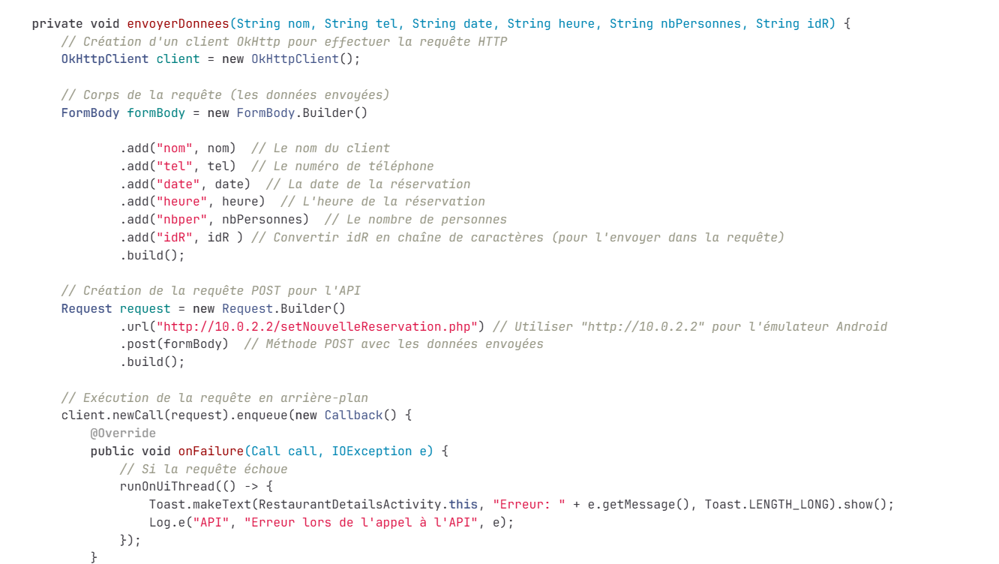

Ce projet avait pour objectif de créer une application de A à Z permettant de réserver une table à un restaurant. Cette application est liée à la base de données du projet R3sto.
Compétences acquises :
Exploiter des référentiels, normes et standards adoptés par le prestataire informatique :
En développement, il est important de respecter certaines normes pour garantir une organisation simple et claire, améliorer la portabilité du projet et faciliter le travail en équipe. Par exemple, ce projet suit des règles de nommage et une documentation du code. Le code est bien documenté, les variables sont nommées de manière explicite, et il est correctement indenté sans répétition inutile.

Gérer des sauvegardes :
Il est essentiel de disposer d'un espace pour conserver les traces du travail accessible à tous les membres du projet. La mise en place d’un système de versionning et de sauvegarde a permis de suivre l’évolution du projet et de prévenir toute perte de données. Pour cela, nous avons utilisé GitLab pour centraliser le code, en nommant méthodiquement chaque commit.
Le lien du GitLab se trouve au pied de la page.
Planifier les activités :
Mettre en œuvre une organisation du projet. L’utilisation des fonctionnalités de planification sur GitLab nous a permis de répartir les tâches au sein de l’équipe et d’anticiper les différentes étapes du projet.
Évaluer les indicateurs de suivi d’un projet et analyser les écarts :
Mettre en œuvre des indicateurs permettant de suivre l’avancée du projet, évaluer les retards éventuels et adapter nos priorités en conséquence. GitLab a également servi à suivre l’avancement de chaque tâche, facilitant les ajustements de planning selon les écarts constatés entre prévisions et réalisations.